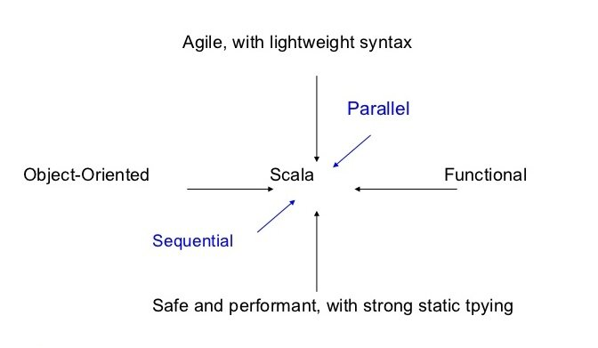

Introduction to
&
Why Functional Programming ?
The Challenge
- Moores law now achieved by increasing the number of cores.
- Huge workloads that requires horizontal scaling
- "PPP" Grand Challenge

Concurrency and Parallelism
Executes Programs faster on parallel hardware
Manage concurrent execution threads explicitly
The root of the problem
- non-determinism caused by concurrent threads accessing shared mutable state.
var x = 0
async { x = x+1 }
async { x = x*2 }
// Can give 0,1,2
- It helps to encapsulate state in actors or transactions, but the fundamental problem stays the same.
- non-determinism = parallel processing + mutable state
- To get a deterministic processing, avoid the mutable state!
- Avoiding mutable state means programming functionally.
Definition of a Pure Function
A pure function is a function where the return value is only determined by its input values, without observable side effects.
def example(x:Double):Double = x* sqrt(2)
def example(x:Double):Double = x* 1.4142135623730951
Why Scala ?
Scala is a Unifier
Scala's ToolBox
Parallelism :
Distributed Collecctions
Concurrency :
Software Transactional memory
Futures
Akka
Few Examples
A Class ...
Java :
public class Person {
public final String name;
public final int age;
Person(String name, int age) {
this.name = name;
this.age = age;
}
}
Scala :
class Person(val name:String,val age:Int)
... and its usage
Java :
import java.util.ArrayList;
...
Person[] people;
Person[] minors;
Person[] adults;
{
ArrayList<Person> minorsList = new ArrayList<Person>();
ArrayList<Person> adultsList = new ArrayList<Person>();
for(int i = 0 ; i< people.length; i++)
(people[i].age < 18 ? minorsList:adultsList).add(people[i]);
minors = minorsList;
adults = adultsList;
}
Scala :
val people : Array[Person]
val (minor, adults) = people partion (_.age < 18)
Going Parallel
Java :
?
Scala :
val people : Array[Person]
val (minor, adults) = people.par partion (_.age < 18)
Things I miss so much in Java
I don't remember the last time I saw a
java.lang.NullPointerException
at $line23.$read$$iw$$iw$.liftedTree1$1(:13)
at $line23.$read$$iw$$iw$.(:13)
at $line23.$read$$iw$$iw$.()
at $line23.$eval$.$print$lzycompute(:7)
at $line23.$eval$.$print(:6)
at $line23.$eval.$print()
at sun.reflect.NativeMethodAccessorImpl.invoke0(Native Method)
at sun.reflect.NativeMethodAccessorImpl.invoke(NativeMethodAccessorImpl.java:57)
at sun.reflect.DelegatingMethodAccessorImpl.invoke(DelegatingMethodAccessorImpl.java:43)
at java.lang.reflect.Method.invoke(Method.java:606)
Thanks to how the values from JavaMethods are returned within the Option Class.
Note : Ignoring it and directly calling a the get Function can still lead to faulty code.
The Painful way of writing parallel and concurrent applications
No more Runnable Blocks of code.
Getting Started
Using Scala
- Scala Interpreter
- Scala Scripts
- Compiled Scala Code
- Build Tools Maven, sbt
Scala Interpreter
Welcome to Scala 2.11.8 (Java HotSpot(TM) 64-Bit Server VM, Java 1.7.0_79).
Type in expressions for evaluation. Or try :help.
scala> println("Hello World")
Hello World
scala>
Scala Interpreter
$ scala
Welcome to Scala 2.11.8 (Java HotSpot(TM) 64-Bit Server VM, Java 1.7.0_79).
Type in expressions for evaluation. Or try :help.
scala> object HelloWorld {
| def main(args: Array[String]): Unit = {
| println("Hello, world! "+args.mkString(",") )
| }
| }
defined object HelloWorld
scala> HelloWorld.main(Array())
Hello, world!
scala> HelloWorld.main(Array("hi","there"))
Hello, world! hi,thereScala Scripts
$ cat hello.scala
println("hello world")
$ scala hello.scala
hello world
Scala Scripts
$ cat hello.scala
object HelloWorld {
def main(args: Array[String]): Unit = {
println("Hello, world! "+args.mkString(",") )
}
}
HelloWorld.main(Array())
HelloWorld.main(Array("hi","there"))
vishnu@HMECL001076 ~/learning
$ scala hello.scala
Hello, world!
Hello, world! hi,thereCompiled Scala Code
$ cat HelloWorld.scala
object HelloWorld {
def main(args: Array[String]): Unit = {
println("Hello, world! "+args.mkString(",") )
}
}
$ scalac HelloWorld.scala
$ scala HelloWorld
Hello, world!
$ scala HelloWorld hey how are you
Hello, world! hey,how,are,you
Build Tools - Maven
$ mvn archetype:generate \
-DarchetypeGroupId=net.alchim31.maven \
-DarchetypeArtifactId=scala-archetype-simple \
-DarchetypeVersion=1.5 \
$ tree simple
simple
|-- pom.xml
`-- src
|-- main
| `-- scala
| `-- test
| `-- App.scala
`-- test
`-- scala
`-- samples
|-- junit.scala
|-- scalatest.scala
`-- specs.scala
7 directories, 5 filesmvn exec:java -Dexec.mainClass="test.App"To create a java scala Mixin Project check link
Build Tools - sbt
$ sbt
[info] Set current project to test (in build file:/home/vishnu/learning/test/)
> run
[info] Updating {file:/home/vishnu/learning/test/}test...
[info] Resolving org.fusesource.jansi#jansi;1.4 ...
[info] Done updating.
[info] Compiling 1 Scala source to /home/vishnu/learning/test/target/scala-2.10/classes...
[info] 'compiler-interface' not yet compiled for Scala 2.10.6. Compiling...
[info] Compilation completed in 16.501 s
[info] Running HelloWorld
Hello, world!
[success] Total time: 20 s, completed 22 Mar, 2016 2:27:10 PM
> run hey how are you
[info] Running HelloWorld hey how are you
Hello, world! hey,how,are,you
[success] Total time: 0 s, completed 22 Mar, 2016 2:27:59 PM
>
Build Tools - sbt Dependencies
$ cat build.sbt
name := "sbtExample"
version := "1.0"
scalaVersion := "2.10.0"
resolvers += "Typesafe Repository" at "http://repo.typesafe.com/typesafe/releases/"
libraryDependencies += "com.typesafe.akka" % "akka-actor_2.10" % "2.2-M1"
libraryDependencies += "com.typesafe" % "config" % "1.3.0"Thank you
Next Slide : Scala Basics